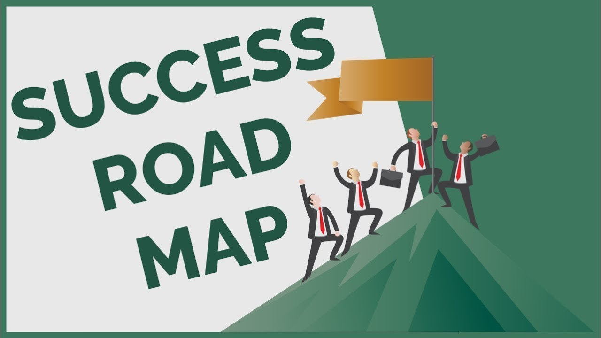
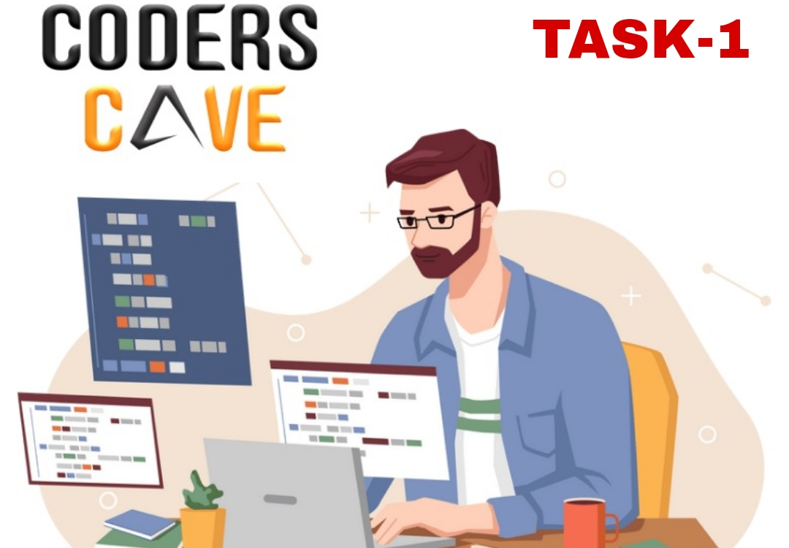
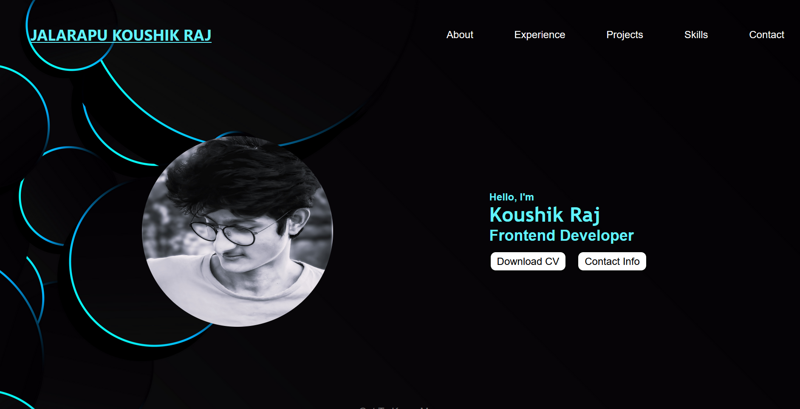
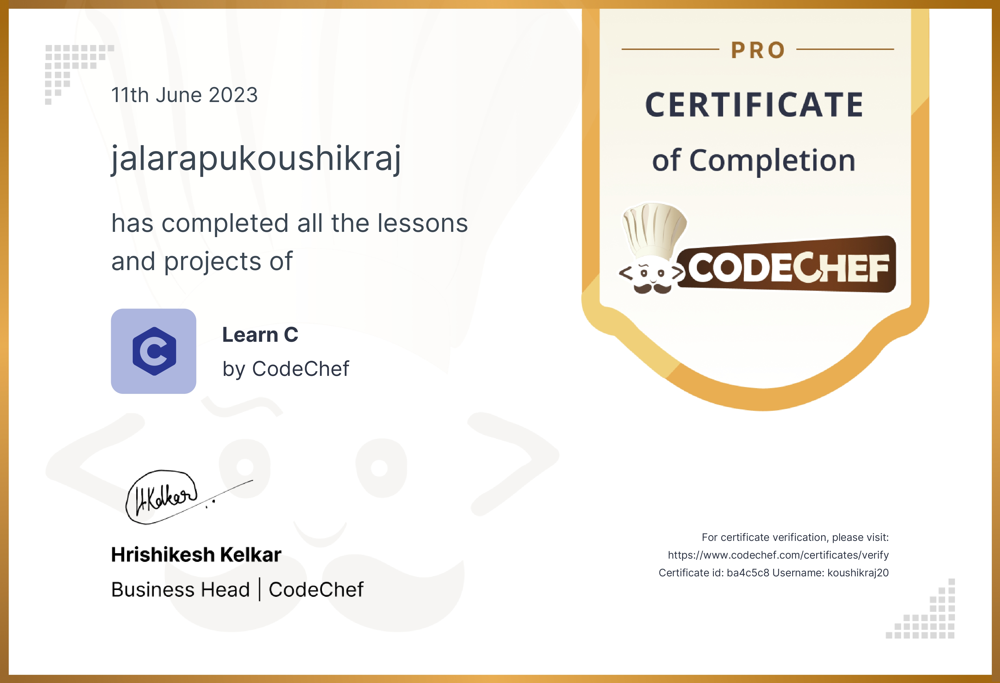
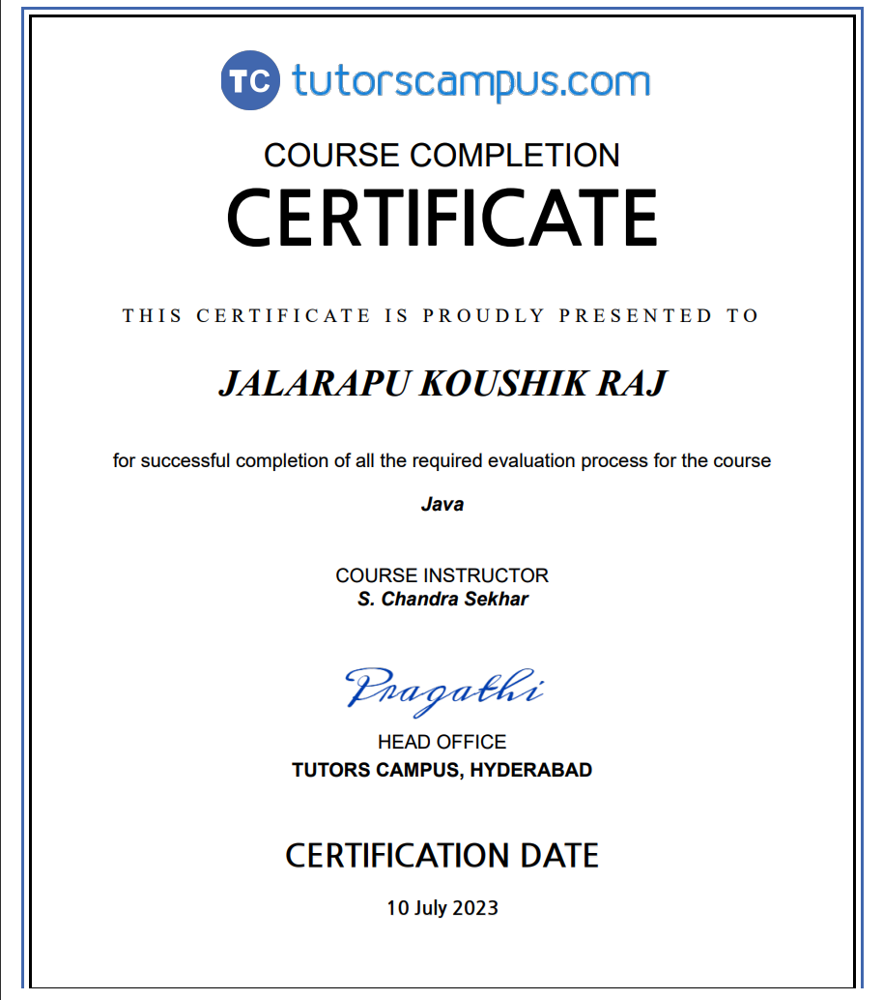

My Personal Blog
"As a newbie in frontend web development, I love creating websites with HTML, CSS, and JavaScript. I'malways learning and improving, and my portfolio shows my knack for clean, user-friendly designs.Excited to keep growing and collaborating in this field!"
About Me
Hey there, I'm Koushik Raj, a student with a passion for coding and a dream of becoming a software developer. As I navigate through the world of programming, I've found myself drawn to the dynamic realm of web development, where creativity meets functionality to bring ideas to life.
In between coding sessions and diving into the latest web technologies, you'll often find me immersed in the virtual worlds of my favorite games, exploring new adventures and honing my strategic skills. And when I'm not glued to my computer screen, you can catch me out on the cricket field, where I trade lines of code for swings of the bat as I indulge in my love for the game.
Through this blog, I hope to share my journey as a budding developer, from the challenges I encounter to the victories I celebrate along the way. Join me as I strive to turn my passion for coding into a fulfilling career and explore the endless possibilities that the world of software development has to offer.
My Interests, Hobbies, and Passions
As a developer, I'm dedicated to crafting responsive websites that enhance companies' online presence and drive success in the digital realm. Beyond coding, I find joy in the melodies of song, the camaraderie of cricket matches, and the laughter shared with friends. Whether belting out tunes or scoring runs on the pitch, I cherish these moments of connection and relaxation. When not immersed in code or sports, you'll often find me cheering on my favorite cricket teams or indulging in the cinematic world of movies. Through it all, my passions fuel my creativity and enrich my journey as a developer.

"Origins: My Writing Journey and the Spark Behind This Blog"
Embarking on my writing journey as a beginner, I found myself drawn to the power of words to inspire, uplift, and motivate. Despite being at the outset of my expertise, I recognized the potential of sharing my experiences and insights through a blog as a means to connect with others and make a positive impact.
As I navigated the world of writing and blogging, I discovered the profound satisfaction that comes from not only expressing oneself but also from knowing that your words have the power to influence and uplift others. While I may still be honing my skills as a writer, I've seized every opportunity to showcase my abilities on different platforms, earning certificates along the way to validate my progress and accomplishments.
Through this blog, my aim is simple yet profound: to inspire and motivate both myself and my readers. By sharing my journey as a beginner navigating the complexities of learning and growth, I hope to show others that even in the early stages of our endeavors, we can make a difference. Whether it's through sharing my triumphs, reflecting on my challenges, or celebrating the successes of others, I aspire to create a space where readers feel encouraged to pursue their passions and strive for greatness.
"The Path to Victory: A Journey of Determination"
Success is a thrilling journey 🚀 marked by milestones 🏆 and challenges , where determination and resilience pave the path to victory. Each milestone reached is a cause for celebration, motivating further progress towards our goals. 🎉
Success often emerges from the combination of change and hard work. Embracing change 💡 allows for adaptation and growth, opening doors to new opportunities and perspectives. Paired with diligent effort and perseverance 💪, it transforms challenges into stepping stones towards achievement. With each stride forward, fueled by dedication and resilience, the path to success becomes clearer and more attainable. 🌟
Internships
CodersCamp
🚀 Thrilled to announce the completion of my internship project task-1 at CodersCave: my personal portfolio website! 🎉 Designed to showcase my skills and experiences in a clean, visually appealing format. Grateful for the opportunity to learn and grow during this experience. Check it out! #Internship #PortfolioWebsite #CodersCave #webdesign CodersCave 😊 click me
"Certifications: Acknowledging Achievements and Skills"
FreeCodeCamp

"🌟 Thrilled to announce that I've Just earned my Responsive Web Design certificate from FreeCodeCamp! 💻 Ready to create stunning websites for any device. Let's connect! 🚀 #FreeCodeCamp #WebDesign #Certification #linkedin " freeCodeCamp
CodeChef
"In recognition of my prowess in C programming, I have been awarded the prestigious CodeChef certificate, a testament to my dedication and proficiency in the language."
TutorsCampus
"After completing the comprehensive course on TutorsCampus, I proudly hold the certificate, demonstrating my mastery of Java programming and advanced software development concepts."